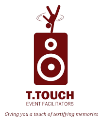
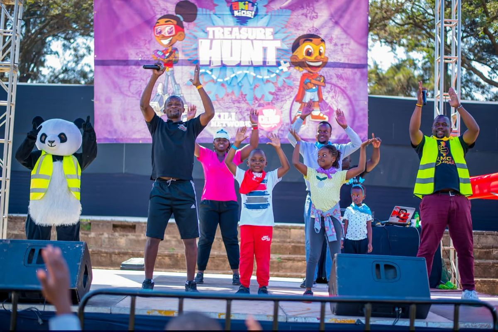
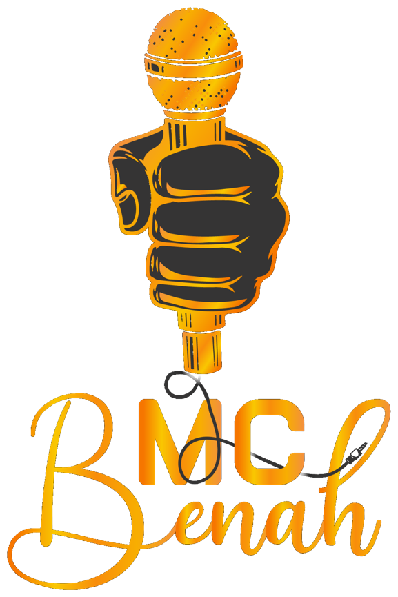
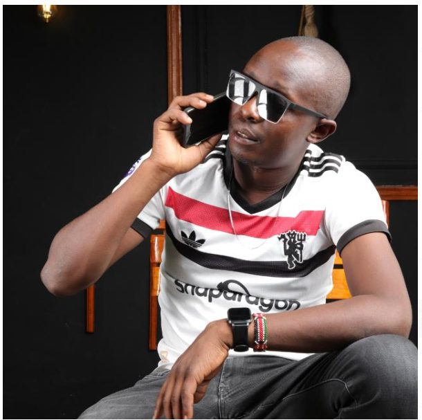
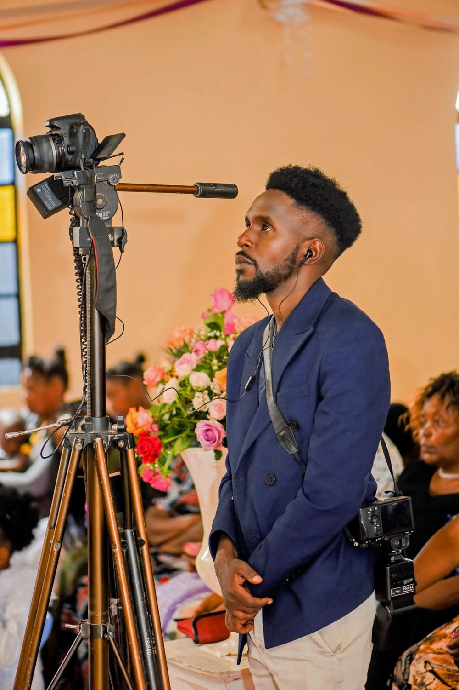
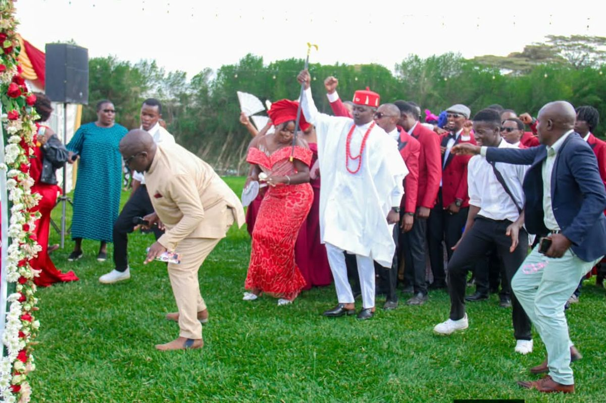
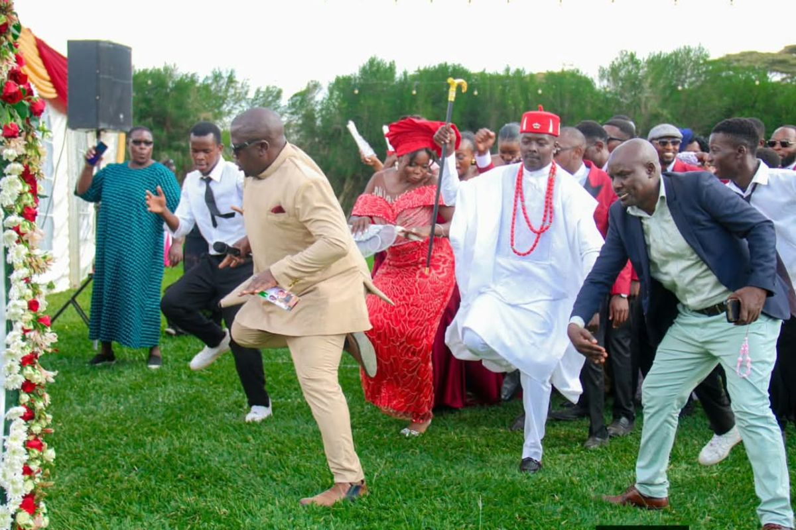
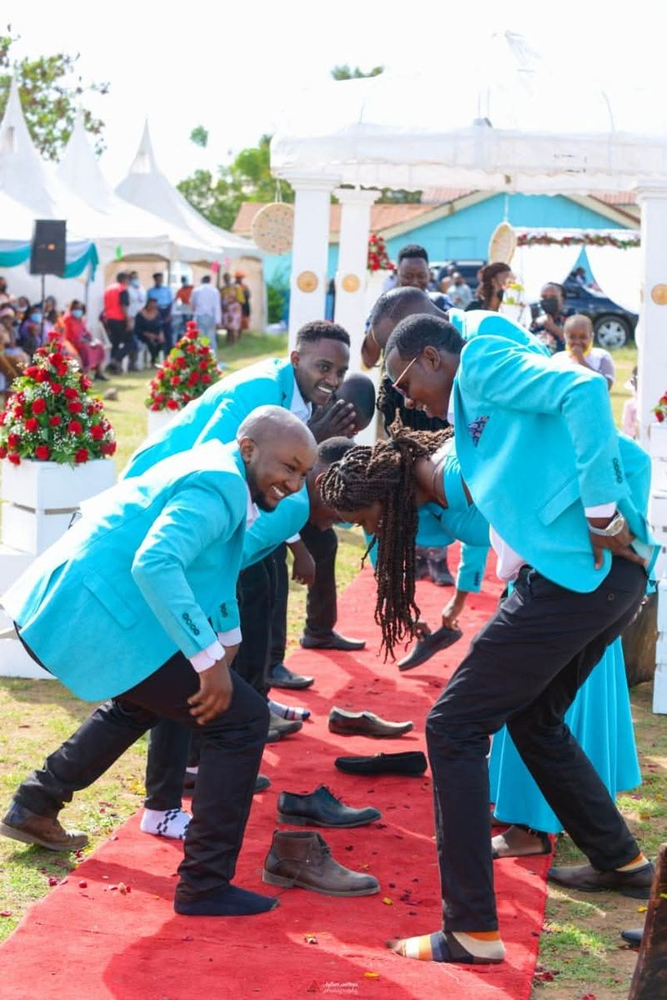

Vision
To become the most trusted events and entertainment brand in Kenya, delivering memorable and stress-free experiences.

EVENTS • ENTERTAINMENT • EXPERIENCES
From boardrooms to wedding celebrations, T.touch Events Facilitators brings people together through engaging facilitation, entertainment and thoughtful event experiences.



Rated 4.9/5 from 30 Google reviews. Review themes include professionalism, attention to detail, communication and coordination.
T.touch Events Facilitators is a premium events management and entertainment company based in Ruai, Nairobi, Benna House, Kangundo Road.
We create stylish, memorable, and seamless events that leave lasting impressions. Whether it's a wedding, corporate function, or family celebration, we bring excellence, creativity, and professionalism to every occasion.
What started with simple gatherings and community events has grown into a full-service events and entertainment company, trusted across Nairobi and its outskirts.
Over the years we have:
Today, T.touch Events Facilitators proudly stands as a reputable brand known for creativity, quality, and memorable experiences.
To become the most trusted events and entertainment brand in Kenya, delivering memorable and stress-free experiences.
To create unforgettable moments through creativity, professionalism, and passion in every event we handle.
If you think Scouting activities end after high school, then you are very wrong! In fact, the journey has only just begun. You might leave high school, but Scouting? That thing follows you into adulthood!
After high school, you graduate into the Rover Scouts or become a Jasiri Scout. And if you happen to find yourself at Kenyatta University, you will meet the Panthera Rover Scouts. At the University of Nairobi, there are the Kili Rover Scouts. In short, the uniform might change, the school bell might disappear, but the spirit of adventure, service and friendship remains alive.
Now, let's talk about what happens when a group of young people spend a little too much time around campfires, bonfires, games, singing, dancing and organising activities.
Somewhere between pitching tents, planning camp programmes, coordinating games and making sure everyone was having a good time, an idea was quietly cooking.
And no, it wasn't just the food at the campfire!
It was the realisation that the skills we were learning through Scouting could be taken beyond the campsite and transformed into something bigger.
Scouting teaches you how to organise people, lead teams, manage activities, improvise when things don't go according to plan and, most importantly, make something memorable out of very little. If you have ever tried organising a camp activity with twenty energetic Scouts and one missing whistle, you know exactly what we mean!
It was from these youthful Scouting experiences that the idea of T.touch Events Facilitators was born.
What started as an exciting idea inspired by camp activities, bonfire games, teamwork and the spirit of adventure gradually grew into an events facilitation venture.
Our first assignments were humble but meaningful. We started with school graduation ceremonies and charity events, bringing the same enthusiasm, creativity and organisational skills we had gathered from our Scouting days.
One event led to another. We learnt, experimented, made mistakes, improved and kept growing. Before long, the small idea inspired by campfire experiences was finding its way into weddings, celebrations and corporate events, including those much-awaited end-of-year parties where even the most serious office manager suddenly discovers they can dance!
Today, T.touch Events Facilitators brings together the very things that inspired its birth: creativity, teamwork, entertainment, leadership and the ability to turn ordinary gatherings into extraordinary experiences.
From coordinating activities around a campfire to facilitating corporate team-building experiences; from organising school graduations to hosting weddings; from bonfire entertainment to end-of-year celebrations, the journey has been nothing short of an adventure.
And perhaps that is the beauty of it all. We never really left the campsite. We simply upgraded the venue, exchanged tents for event halls, replaced campfire songs with professional sound systems and traded whistles for microphones!
But one thing has remained unchanged: the desire to bring people together and create memories worth sharing.
T.touch Events Facilitators was not simply born out of a business opportunity. It was born out of a lifestyle, a culture and a spirit that Scouting instilled in us.
So, the next time you attend a T.touch event and find yourself laughing, dancing, participating in an activity or making new friends, remember that somewhere behind that experience is a little bit of Scouting magic.
We are still guided by the same spirit of adventure, service, teamwork and creativity.
Only this time, there are no camp inspection parades the following morning!
T.touch Events Facilitators – We create testifying memories.
Once a Scout, always a Scout. Once the spirit of adventure catches you, even a wedding reception can become another exciting camp programme! 🏕️🎤
Full-service events and entertainment solutions for moments worth celebrating.
Your big day deserves more than a beautiful venue; it deserves beautiful memories! We bring the energy, coordination and entertainment to make your wedding celebration flow seamlessly, keeping your guests engaged from the first welcome to the final dance.
Who said corporate events must be all presentations and PowerPoint slides? We turn corporate gatherings, staff celebrations and end-of-year parties into exciting experiences filled with interaction, entertainment, laughter and team spirit.
Tradition meets entertainment! We help bring colour, warmth and organisation to your traditional ceremonies, creating an atmosphere where families connect, cultures are celebrated and every important moment receives its deserved attention.
Caps up, celebrations on! From school graduations to college and university celebrations, we help make the milestone memorable with engaging facilitation, entertainment and well-coordinated programmes.
Every contribution counts, and every gathering deserves a great facilitator. We bring enthusiasm, audience engagement and programme coordination to fundraising events, helping maintain momentum while keeping the spirit of giving alive.
Fun, personal celebrations for every age, with entertainment, interaction and coordination that keep the party going.
Coming home is always special! Whether welcoming a loved one back from abroad, celebrating a family reunion or organising a homecoming party, we help create a warm, lively and memorable welcome.
Work hard, play harder and build stronger teams! We facilitate interactive team-building experiences through energisers, group challenges, fun activities and engaging sessions designed to encourage teamwork, communication and collaboration. Be warned: your office title may not save you when the dancing competition begins!
Making memories while making a difference. We support charity events, community initiatives and fundraising activities through event facilitation, entertainment and coordination, helping bring people together for meaningful causes.
A great MC does more than hold a microphone; they hold the room! From setting the tone and connecting with guests to managing programme flow and creating spontaneous moments, our MC services bring confidence, humour, interaction and professionalism to your event.
Good music sets the mood, great music creates memories! Our DJ services bring the right beats, mixes and musical selections to keep your guests entertained. From smooth background music to energetic dance-floor sessions, we know when to turn up the volume!
Because even the best speech deserves to be heard! We provide PA and sound system hire to support clear audio delivery at your events, including speeches, presentations, entertainment and celebrations. We help bring the sound that makes your occasion come alive.
The voice, the music and the cameras that bring every occasion to life.

The Voice. The Energy. The Experience.
MC Benah is a passionate Master of Ceremonies, event facilitator and entertainer dedicated to creating engaging, memorable and meaningful event experiences.
With a natural ability to connect with audiences, command the stage and keep programmes flowing, MC Benah brings a unique touch of energy, creativity and professionalism to every occasion.
From elegant weddings and traditional ruracio ceremonies to corporate functions, team-building activities, birthdays, graduations and social celebrations, MC Benah understands that every event has its own personality and deserves an approach that reflects its purpose.
Beyond the microphone, MC Benah is passionate about bringing people together through entertainment, interaction and well-coordinated experiences. His approach combines audience engagement, humour, spontaneity and effective programme management to ensure that guests remain connected and entertained.
As part of T.touch Events Facilitators, MC Benah contributes to a wider vision of delivering memorable events through professional facilitation, entertainment and event experiences.
His philosophy is simple: Every event is an opportunity to create a memory worth telling.
MC Benah – Giving Every Occasion a Touch of Excellence.
Book MC Benah ↗The Rhythm. The Vibe. The Perfect Soundtrack.
DJ Battyz is a passionate and dynamic DJ dedicated to creating unforgettable musical experiences and keeping every audience entertained.
With an appreciation for diverse music genres and the ability to read the crowd, DJ Battyz brings the right sounds, rhythm and energy to every occasion. From elegant wedding receptions and traditional celebrations to corporate functions, birthday parties, graduations and social events, the focus is always on creating an atmosphere that keeps guests engaged and entertained.
Whether setting the mood with smooth selections or elevating the energy with exciting mixes, DJ Battyz understands that music is more than entertainment; it is an essential part of the experience.
As part of T.touch Events Facilitators, DJ Battyz brings the musical touch that complements professional event hosting and facilitation.
The mission is simple: Great music, great energy and memories that last long after the last song.
DJ Battyz – Setting the Rhythm for Memorable Moments.
Book DJ Battyz ↗
Capturing Moments. Telling Stories. Preserving Memories.
K Bon is the videographer at T.touch Events Facilitators, responsible for capturing the highlights, emotions and special moments that make every event unique.
Through creative videography, K Bon helps transform live experiences into lasting visual memories. From wedding ceremonies and corporate functions to birthdays, graduations and celebrations, his focus is on documenting the moments that deserve to be remembered.
His role goes beyond recording events; it is about capturing the atmosphere, the emotions and the stories behind every occasion.
K Bon – Every Moment Has a Story Worth Capturing.

The Eye for Detail. The Art of Capturing Moments.
George is the official photographer at T.touch Events Facilitators, bringing a creative eye and passion for visual storytelling to every assignment.
With a focus on capturing authentic moments, special details and the emotions behind every celebration, George ensures that the memories created at each event can be revisited long after the occasion has passed.
From beautiful wedding portraits and candid celebrations to corporate photography and event highlights, George's role is to turn fleeting moments into timeless photographs.
As T.touch's official photographer, he plays an important role in documenting the experiences that define the brand.
George the visualist – Seeing Beyond the Moment, Capturing the Memory.
A glimpse of the people, energy and celebrations behind the T.touch experience.






See the energy, the dancing and the celebrations that make every T.touch event memorable.
The events industry in Kenya is rapidly expanding, driven by a vibrant social scene, a growing middle class, and increasing demand for polished, memorable event experiences. Clients are shifting from informal setups to professionally curated events that offer seamless coordination, quality entertainment, and stress-free execution.
Corporate organizations are also investing more in team-building activities, launches, celebrations, and charity initiatives, creating new opportunities for professional facilitators. Although the market is competitive, it remains highly fragmented, with many providers offering only single services. This gives T.touch Events Facilitators a strong advantage as a one-stop solution for MC services, DJ entertainment, sound systems, team-building facilitation, and full event management.
With social media now influencing most event-booking decisions, brands with strong online presence and consistent delivery like T.touch are better positioned to attract and retain clients. Emerging trends such as theme based celebrations, intimate premium events, and high-quality sound expectations continue to fuel demand, placing T.touch at the forefront of Kenya's evolving events landscape.
"If you have an event, worry no more. The best service providers in town are right here."
Book T.touch Events Facilitators today for good and efficient service delivery.
Get a QuoteFill in the form and it opens WhatsApp with your details ready to send. We will reply with a clear quote.
Tell us what you are planning. Let's give your occasion the T.touch.